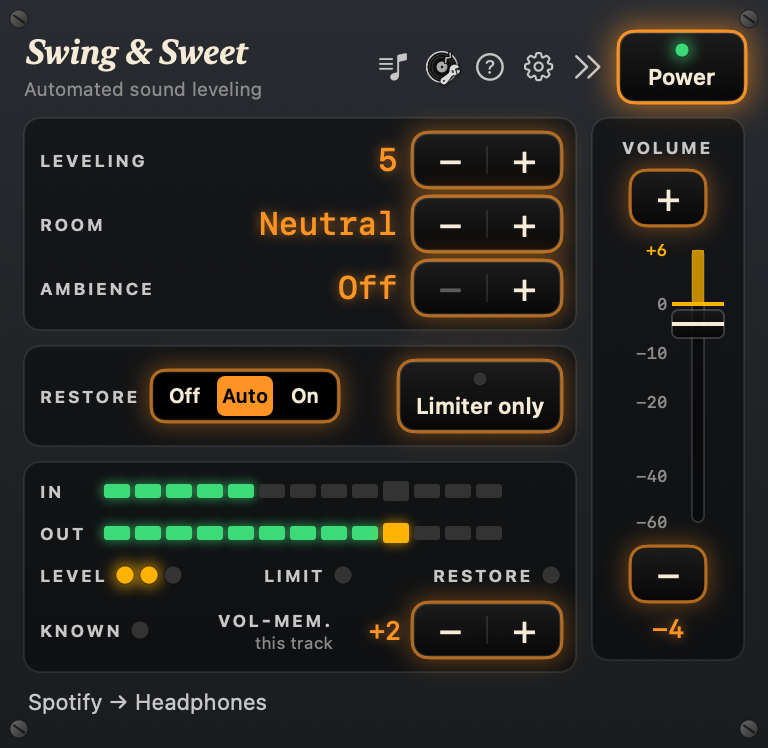
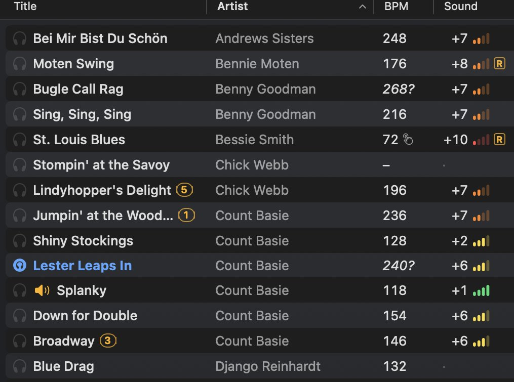
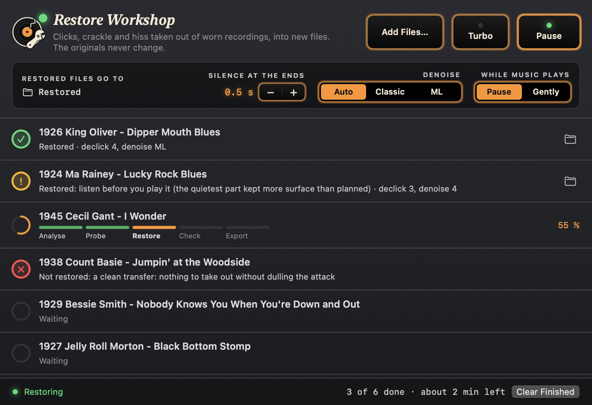

How firmly is your choice
Leveling goes from Soft, which keeps more of the difference between a quiet trio and a big band, to Strict, which lifts quiet passages more.
For swing and blues DJs, dance teachers and listeners · Mac
Swing & Sweet takes the sound of your music app, processes it and passes it on to the PA: the same loudness from track to track, quiet passages lifted, harsh brass softened and the noise of worn 78s reduced. The aim is one mixer setting for the whole evening.
Public beta on TestFlight · planned for the Mac App Store

How it works
Your music app plays as usual. Swing & Sweet takes its sound, processes it and sends it to the output you choose. It needs no extra drivers: choose the app and press Power.
Pause, skip and seek in Spotify, Music and the built-in player are heard in the room within about half a second; in other apps after about 2.5 s. Output: the headphone jack to your mixer, a USB interface, or AirPlay at home.
Swing & Sweet gives no right to play music in public. The streaming service's terms and the venue's licences are for the DJ or the organiser to check.
Leveling
A 1925 Bessie Smith 78 and a modern remaster can be 10 dB apart. Volume normalization (ReplayGain, Sound Check) gives each track one setting. Swing & Sweet does that as well, and then goes on adjusting inside each track while it plays.
Quiet transfers disappear in the room, and loud remasters are too loud.
One mixer setting can hold from a 1925 transfer to a 2019 remaster.
A soft piano solo or a muted trumpet is raised, so that it is heard over a full floor.
A shout chorus is brought down towards the rest of the track.
Breaks and stop-time are not lifted. Only the extremes are evened out.
The pictures in this section are illustrations, not measurements.
Leveling goes from Soft, which keeps more of the difference between a quiet trio and a big band, to Strict, which lifts quiet passages more.
Restore
Clicks, crackle and hiss are reduced: while you play, or ahead of the evening as new copies of your most worn records.

A worn recording gets as much cleaning as it needs, and a clean one is left alone. Once a track is being cleaned, it is cleaned to its end.
The player's library shows a grade for every file, from poor to good, and how much the room will lift it, before you play it.

Add worn recordings or a whole folder. The workshop restores them in the background and saves each as a new lossless file (Apple Lossless, or FLAC if you choose). Your originals are not changed.
The Friars Society Orchestra (the New Orleans Rhythm Kings) on a worn Gennett 78. The same 22 seconds before and after the Restore Workshop. You can switch while it plays.
Before: the disc as it plays, transferred flat by the Great 78 Project (Internet Archive). After: the workshop's finished copy at its default settings. Both at the same loudness. The recording (1922) and the tune (William H. Tyers, 1911) are in the public domain.
Other controls

The built-in player
A player for social dancing, without decks or mixing. Each file starts at once and at its level, and the pause between tracks is the length you set, counted from the music. Search, tags, BPM filters and playlists. Your files are not changed.

The next three tracks, when the set ends, and its tempo curve. A small mark for the same artist twice in a row or a large jump in tempo.
Any track in Bluetooth or USB headphones while the room plays on, at about the level the room will give it.
Tempo in the count swing DJs use. An unsure value is marked, and TAP corrects it.
A track at 70 to 110 % of its tempo with the pitch kept, to teach a step at an easier speed.
Get it
14 days free
You start the trial yourself, and everything works during it. It is checked only when you press Power, so it does not stop music that is playing, and it does not turn into a purchase by itself.
One purchase
After the trial, one purchase per Apple ID, for all your Macs. No subscription, no account.
What you need
A Mac with Apple silicon and macOS 14.2 or later. At a dance: a cable from the headphone jack to a line input on the mixer.
The beta: install Apple's free TestFlight app on your Mac and open the beta's link. The 14-day trial works in the beta as it will in the store, and a purchase made in a beta is not charged.
Questions
They give each track one volume setting. Swing & Sweet does that too, and then adjusts while the track plays: quiet passages are lifted, loud ones held back, harsh brass softened and the noise of worn 78s reduced. It needs no scan first, so it also works on a browser's sound.
Yes, by 2.5 seconds: Swing & Sweet listens that far ahead, so that it can turn a loud entry down before it arrives. Pause, skip and seek in Spotify, Music and the built-in player are still heard within about half a second; in other apps, 2.5 s later. Swing & Sweet's own Volume acts at once, and a microphone on the mixer is not delayed.
If Swing & Sweet stops while you play from Spotify, Music or another app, that app plays on, unprocessed, on the same output. The built-in player is part of the app: if it stops, the room goes quiet. Opened again, it offers to go on from the same track, with the tracks that were in Up Next. Keep a reserve source on its own mixer channel, as with any setup.
It cannot bring back what a recording never had: a worn 78 still sounds like a 78, with less noise. It is not a mixing program; there are no decks and no beat matching. DJ programs can be chosen as a source like any other app, but they have not been tested yet.
No. It holds a few seconds of sound in memory to process it; no sound is saved or uploaded, and there is no account, no analytics and no tracking. macOS still asks for System Audio Recording: that is Apple's name for any access to another app's sound, whether or not it is saved.
Write to Christian Melby Bjørn, who makes Swing & Sweet: what works on your floor, what does not, and the records that still sound wrong.